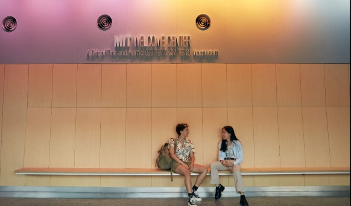
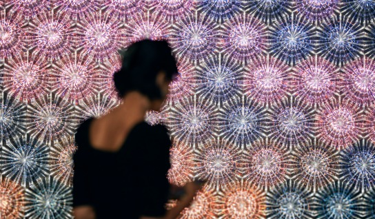
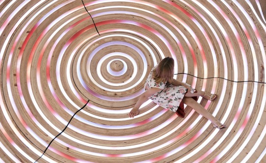
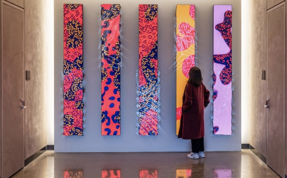
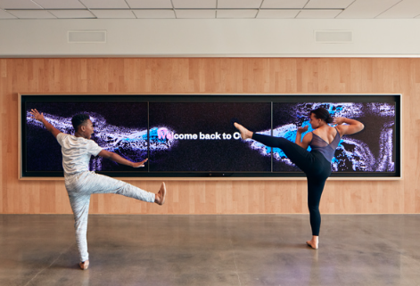
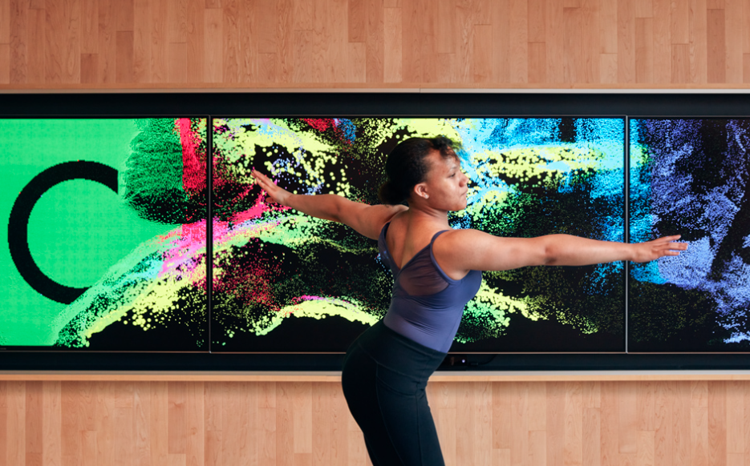
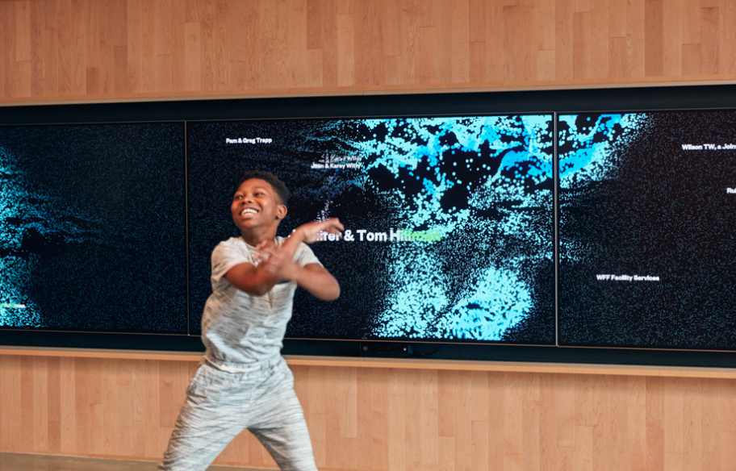
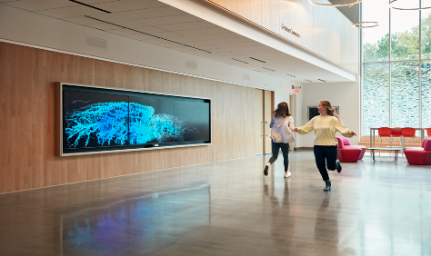

Ideas relevantes:
- Rompe con las convenciones tradicionales del cine a través del videoarte.
- Influencia de la tecnología digital en la creación de entornos virtuales.
- Transformación de la experiencia del espectador mediante la inmersión en entornos virtuales.
- Ampliación de las posibilidades creativas y la experiencia del espectador gracias a la tecnología digital.
Creado por SOSO
SOSO
www.sosolimited.com
Sosolimited es una empresa que reúne diseñadores/as, arquitectos/as , ingenieros/as y artistas con el fin de crear experiencias visuales creativas e interactivas que relacionan el arte, la tecnología, comunicaciones y el diseño.
“Nuestra visión es un mundo en el que el diseño y la tecnología trabajen juntos para desbloquear nuestro potencial creativo colectivo y acercarnos más a nosotros mismos, a los demás y al planeta.” (soso)




COCA
COCA es un centro comunitario multidisciplinario de artes en St. Louis, en donde implementaron un dinámico muro de reconocimiento que canaliza la energía y el movimiento de las personas en la comunidad.
La experiencia permite explorar y crear con sus cuerpos, dirigiendo el movimiento y el color de ondas fluidas de casi un millón de partículas con sus movimientos, dando vida a las pantallas.




Reflexiones.
Vinculación Expanded Cinema y COCA
Ambos se centran en nuevas formas de comunicar e interactuar con el/la espectador/a, mezclando disciplinas como el cine, el arte y la ciencia, enfatizando en cómo las tecnologías y las nuevas formas de arte pueden ampliar las posibilidades de comunicación, reconocen el poder de los entornos inmersivos y las tecnologías digitales para crear experiencias impactantes para el espectador.
Otro punto a destacar es la interacción con el espectador. Ambos se centran en la importancia de la participación y la interacción del espectador. El paper de Weibel explora cómo los entornos virtuales y las tecnologías digitales pueden involucrar activamente al espectador, y COCA, a través de sus programas y clases, fomenta la participación activa de la comunidad en las artes.
También, tanto el paper como el proyecto COCA reconocen el poder de los entornos inmersivos y las tecnologías digitales para crear experiencias impactantes para el espectador. Weibel examina cómo los entornos virtuales pueden transportar al espectador a nuevas realidades, y COCA busca proporcionar experiencias inmersivas a través de su programación artística y eventos especiales.
Mismo objetivo, diferentes formas de abordarlo
La más principal sería el que el paper de Peter Weibel se centra en los inicios de la experimentación tecnológica y las proyecciones expandidas, mientras que COCA es un proyecto actual y moderno que se adapta a las tecnologías y enfoques contemporáneos. Siguiendo la misma línea, el paper de Weibel se centra en los primeros experimentos de cine expandido y videoarte, que a menudo tenían un enfoque análogo. Por otro lado, el proyecto COCA se enmarca en la era digital, aprovechando las tecnologías digitales y las herramientas modernas para la creación artística y la interacción con el espectador.
Alcance: Un nuevo enfoque
El diseño
Tanto el paper como COCA ofrecen un nuevo enfoque y herramienta para explorar y difundir el diseño. El cine expandido y los entornos virtuales pueden ser utilizados como medios creativos para la expresión y comunicación del diseño en contextos multidisciplinarios.
Cultura
Tanto el paper como el proyecto COCA aportan a la cultura digital y son relevantes para las nuevas generaciones inmersas en esta cultura. El cine expandido y las tecnologías digitales exploradas en el paper y aplicadas en COCA representan una forma de expresión artística contemporánea que refleja y contribuye a la evolución cultural.
Es casi imposible negar que el paper y COCA tienen implicaciones para la sociedad actual y futura. Ambos reconocen el impacto de la tecnología digital en nuestras vidas y exploran cómo esta tecnología puede ser aprovechada para crear experiencias artísticas y comunicativas significativas. Además, promueven la participación comunitaria y la diversidad cultural, lo que contribuye a una sociedad más inclusiva y enriquecedora
Nuevos conocimientos a través de los medios digitales
El paper de Peter Weibel profundiza en el concepto de cine expandido y los entornos virtuales, explorando cómo han evolucionado a lo largo del tiempo y su impacto en la forma en que comprendemos y experimentamos el arte. Por otro lado, el proyecto COCA ofrece un espacio multidisciplinario donde se brindan oportunidades educativas en artes visuales, danza, teatro y música, entre otras disciplinas, permitiendo a los participantes desarrollar habilidades creativas y explorar nuevas formas de expresión artística, aprovechando la tecnología digital como medio para ampliar sus horizontes creativos y expandir su conocimiento en el ámbito de las artes
Conclusión
Las nuevas tecnologías y formas de exploración de esta han transformado radicalmente la forma en que nos comunicamos y nos expresamos artísticamente. Es por esto que es importante destacar el trabajo que hacen empresas como SOSOlimited o lo que se propone en el paper expanded cinema , ya que han abierto un mundo de posibilidades creativas y han dado paso a derribar las barreras físicas y geográficas que antes limitaban nuestras interacciones y expresiones artísticas. Se han abierto puertas al arte y la creatividad de formas innovadoras.
Desde la música producida digitalmente hasta la realidad virtual y la realidad aumentada, las posibilidades para la expresión artística se han ampliado enormemente. Los artistas ahora pueden crear obras de arte interactivas, colaborar en proyectos a distancia y experimentar con nuevas formas de presentación y exhibición. La tecnología ha democratizado el acceso al arte y ha permitido a artistas emergentes compartir su trabajo con audiencias globales.